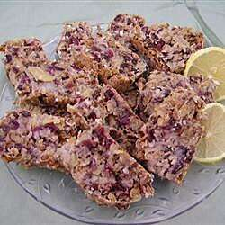

Sugarless fruitcake

Description of the dish
Pineapple, musts, cranberries, and coconut combine in the moist fruitcake using artificial sweetener in place of
sugar.
Ingredients
- 1 cup of chopped golden raisins
- 1/2 teaspoon salt
- 1 1/2 cups of chopped walnuts
- 1 cup chopped cranberries
- 1 cup unsweetened crushed pineapple
- 1/4 cup grated lemon peel
- 1 cup flaked coconut
- 1/3 cup of orange juice
- 8 packets artificial sweetener
- 1 teaspoon ground mace
- 1 teaspoon ground allspice
- 1 teaspoon baking soda
- 1 1/2 cups all-purpose flour
Steps
- Mix sugar substitute with orange juice. Pour over chopped cranberries. Soak 1 hour, mixing often.
- Mix raisins, nuts, coconut, lemon rind in flour until well coated. Add cranberries and orange juice
mixture. Sprinkle baking soda over mixture, and mix. Mix in spices. Fold in crushed pineapple. Pour
batter into a greased and floured 9 inch pan.
- Bake 325 degrees F (165 degrees C) for 40 minutes. Cool.